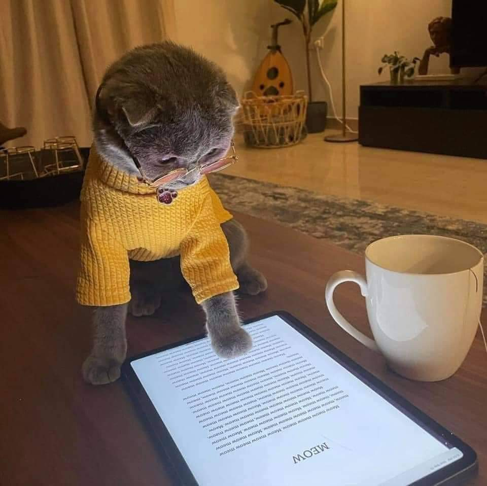
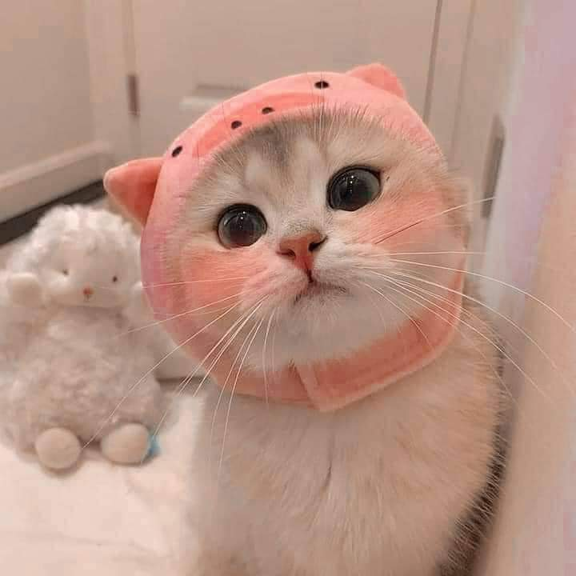

အားလုံးပဲမဂ်လာပါရှင် NDW Cats Things မှကြိုဆိုပါတယ်ရှင် ယနေ့စာဖတ်သူပရိတ်သတ်များအတွက် တင်ဆက်ပေးမယ့် ခေါင်းစဥ်အကြောင်းအရာက "ကြောင်များနှင့်လူနေမှုဘဝ"ပဲဖြစ်ပါတယ်ရှင်
"ကြောင်များနှင့်လူနေမှုဘဝ" ဆိုတဲ့ ခေါင်းစဥ်အတိုင်းပါပဲစာဖတ်ပရိတ်သတ်တို့လူနေမှုဘဝမှာလည်း ကြောင်ကလေးတွေက တစ်စိတ်တစ်ပိုင်းအဖြစ် ပါဝင်ကြပါတယ်(Meow) အဖြစ်ချစ်စနိုးခေါ်ကြတဲ့ ကြောင်ကလေးတွေရဲ့ချစ်စရာကောင်းမှုတွေကိုတော့ လူသားအားလုံးနီးပါး မလွန်ဆန်နိုင်ကြပါဘူးကြောင်ကလေးတွေ သင့်အနားမှာရှိတိုင်း ကြည်နူးမှုကိုခံစားမိပြီဆိုရင် သင်ဟာ ကြောင်ချစ်သူတစ်ဦး ဖြစ်တယ်ဆိုတာ သေချာပါတယ်
ကြောင်ကလေးတွေရဲ့ မျက်နှာအမူအရာကပဲ ချစ်ဖို့ကောင်းရုံတင်မက သူတို့ရဲ့ကိုယ်ဟန်အမူအရာ ချစ်ဖို့ကောင်းမှုတွေက ဟူးမန်းတို့ရဲ့ အချစ်ကို ပိုစေတယ်မဟုတ်လား? ကဲဒါဆို ကြောင်ကလေးတွေရဲ့လှုပ်ရှားမှုကို ဆက်ကြည့်ဖို့ အောက်က buttonကို နှိပ်ဝင်လိုက်ပါနော်